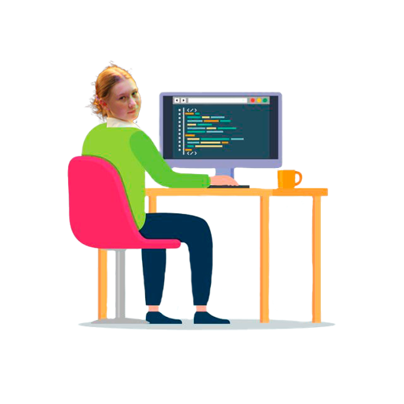

Это архитекторы цифрового мира, которые переводят человеческие идеи, бизнес-логику и математические алгоритмы на язык, понятный компьютерам. Они создают надежный фундамент современной цивилизации: от мобильных приложений и веб-сервисов до сложных промышленных систем и искусственного интеллекта.

Программирование — это не просто механический ввод символов или написание строк кода. Прежде всего, это особый вид инженерного и творческого мышления. Специалист сталкивается с масштабной задачей, разбивает её на логические блоки, проектирует структуру баз данных и находит оптимальное решение, учитывающее производительность, безопасность и удобство пользователя.
Современный программист ежедневно работает с алгоритмами, проводит тестирования, находит и исправляет ошибки (дебажинг), а также постоянно изучает новые технологии, фреймворки и стандарты разработки, так как IT-индустрия развивается с невероятной скоростью.
Отвечает за клиентскую часть продукта — всё, с чем пользователь непосредственно взаимодействует на экране. Это интерфейсы, анимации, адаптивная вёрстка под разные экраны, быстродействие и удобство взаимодействия с сайтом или приложением (используются HTML, CSS, JavaScript, TypeScript).
Создает «мозг» и скрытую от глаз инфраструктуру приложения. Проектирует серверную архитектуру, настраивает безопасную авторизацию пользователей, обрабатывает запросы, управляет базами данных и обеспечивает отказоустойчивость системы (используются Python, C#, Java, PHP, SQL).
Универсальные специалисты, способные самостоятельно спроектировать и запустить как клиентскую, так и серверную часть веб-приложения, а также разработчики мобильного софта под платформы Android и iOS, без которых невозможно представить современную жизнь.
Реальные IT-проекты редко создаются в одиночку. Над крупными информационными системами трудится слаженная команда: системные аналитики, дизайнеры (UI/UX), тестировщики (QA), DevOps-инженеры и менеджеры проектов (Product/Project Managers).
Поэтому важнейшими качествами программиста наряду с техническими навыками являются развитая коммуникабельность, умение работать в команде, способность четко аргументировать свои технические решения и готовность постоянно учиться друг у друга.